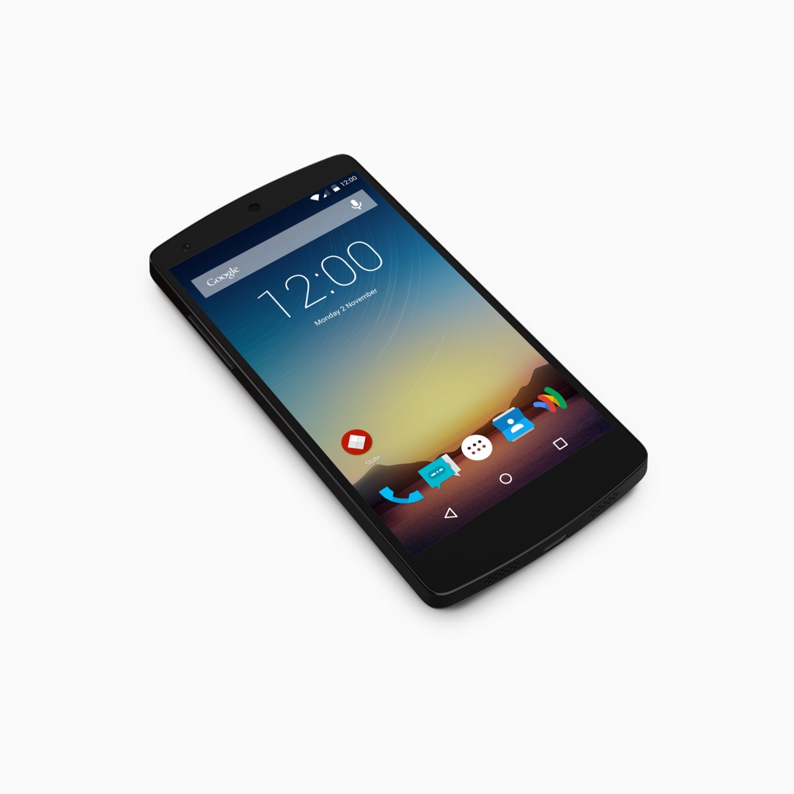
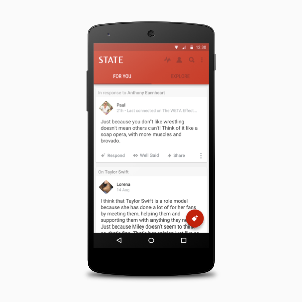
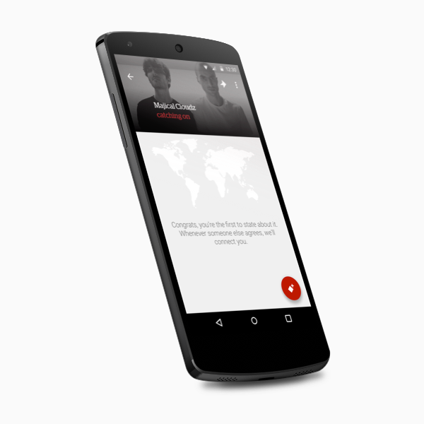

Robin is a workplace training application. It was built from the ground up to offer a supportive learning culture for members onboarding a new company. We focused on delivering an enjoyable experience around the vast amount of content companies already spend on and maximizing on its impact by offering features like engagement stats and a liking system to sustain a feedback loop to management. Questions were added to gauge the value output from individual team members. These features came from interviewing our development partners who used Robin during it's early days to inform our product decisions.
State is the world’s structured opinion network. With the help and support of a world-class team, I helped craft new experiences in the app, on the web and through email. We worked in quick design sprint cycles to iterate our work fast and efficiently. User tests and diary studies provided us with quantitative and qualitative feedback to further explore different design solutions to the problems we faced. My time at State was a great learning experience where I learned to value testing and measuring the impact of an assumed solution.



Introducing the Material Design language to the State Android app, including a new launcher icon. I worked closely with the Android dev team to implement the changes. Sadly, we didn't ship this due to project constraints.
I worked with the energetic team over at Wonder Place to help realign the aspirations of the company with the ever changing and competitive video market. First we realigned the brand and design of the mobile app to better match the target market audience, and then we started work on a ground breaking workflow web application for indie movie makers and large production houses.